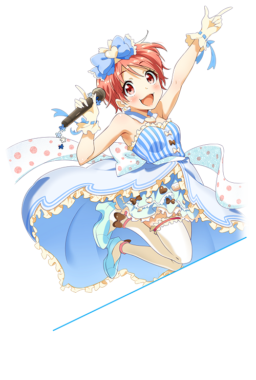

เด็กสาวผู้ชอบเย็บปักถักร้อยที่เกิดในโอซาก้า เธอชอบทำตุ๊กตาประหลาด “น่ารักแบบพิลึก ๆ” เป็นของขวัญให้เพื่อนที่เธอถูกใจ ดูเหมือนจะเรียกคนที่หลงเสน่ห์การเย็บผ้าของเธอว่า "หลงเข้าไปในโซโนะริตชูเวิลด์"
- อายุ
- 17 ปี
- วันเกิด
- 26 กันยายน (ราศีตุลย์)
- กรุ๊ปเลือด
- B
- น้ำหนัก/ส่วนสูง
- 44kg/155cm
- สัดส่วน
- B76/W53/H78
- CV
- ลู ธิง
- ชื่อเล่น
- ริชูริ
- ความสามารถ
- ตัดชุด~
- ของที่ชอบ
- ซุปมิโซะใส่เห็ดออรินจิ~
- อาชีพ
- นักเรียนมัธยมปลาย, ชมรมคนรักคอสตูม
- ยูนิต
- Nanabana Otome
